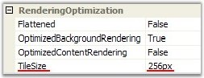
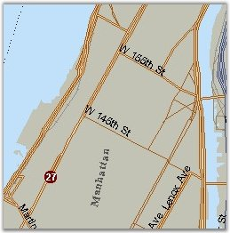
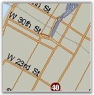

There are three properties for visual customization.
· ShowTilesRenderingStatus
· RenderingStatusImageUrl
· TileSize
Tile Size in OptimizedBackgroundRendering Mode
TileSize property is used for customizing the dimensions of the square tile in OptimizedBackgroundRendering mode.

Figure 42: Tile Size
Default value is set to 256 pixels. It can take values from 8 to 1024 pixels. If the dimensions are small, the diagram will prepare the images slowly and the memory usage will be vast. But if the dimensions are large, the preparation time will be short.


Figure 43: Tile Size set to 256 px Figure 44: Tile Size set to 128 px
Loading Indicator in OptimizedBackgroundRendering Mode
For showing the rendering status in OptimizedBackgroundRendering mode, DiagramWebControl has the ShowTilesRenderingStatus (Appearance section) public property. When this property is set to True, the control will show the rendering status image for each tile. When this property is set to False, rendering will not appear.
Figure 45: Loading Indicator
The ShowTilesRenderingStatus has the RenderingStatusImageUrl sub-property. By using this string property, you can specify the path to your own RenderingStatus image. The path can be a local path or a path to a remote image.
|
[C#]
// Local DiagramWebControl1.RenderingStatusImageUrl = @"~/Images/Loading.bmp"; // Remote DiagramWebControl1.RenderingStatusImageUrl = "http://www.somedomain.com/images/Loading.png"; |
|
[VB.NET]
' Local DiagramWebControl1.RenderingStatusImageUrl = "~/Images/Loading.bmp" ' Remote DiagramWebControl1.RenderingStatusImageUrl = "http://www.somedomain.com/images/Loading.png" |
 Note:
Optimization modes are not universal. You must choose the mode by yourself.
There are a lot of diagram documents; you can combine different modes to find
"The golden mean".
Note:
Optimization modes are not universal. You must choose the mode by yourself.
There are a lot of diagram documents; you can combine different modes to find
"The golden mean".
See Also
Optimization, Properties and Events for Optimization, Optimized Background Rendering Mode, Optimized Content Rendering Mode, Diagram Optimization via HTML Elements, Diagram Caching Modes, Virtual Caching Type and Image Grid Cell Updating Event